Enkesit çıkarma menüsü
Her eksen için enkesitler
Enkesit çıkarma menüsü
PLAN → [APL. ve PROFİL] → [ENKESİTLER]'den de erişilebilen ENKESİTLER sekmesinde, tüm sürecin seçenekleri yapılandırılır: etkilenecek eksenler (bir aralık verilebilir veya sadece aktif gruplardaki eksenler seçilebilir), elde edilen dosyaların temel adı, kotun çıkarılacağı yüzeyler ve enkesitler arasındaki aralık. Ayrıca, aynı iletişim kutusuna, diğer formatlara dışa aktarma gibi işlemleri sağlayan başka bir dizi seçenek ve araç da dahildir.
Bu menüde, aşağıda ele alacağımız çeşitli sekmeler ayırt edilebilir. Bu sekmeler şunlardır: Yüzeyler, Eşit Aralıklar, Olaylar, Genişletme ve İyileştirme, Özel KM'ler, Seçenekler ve Araçlar.
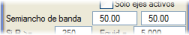Yarı Genişlik'ten itibaren iki parametre tanımlayabiliriz:

|
GENEL menüsünde bir temel ad tanımlanırsa, bu adın arazi enkesitleri tarafından miras alınabileceğini hatırlamakta fayda var. ISTRAM®/ISPOL®, işlenen her eksen için 001, 002,... soneklerini ekler. |
[OLUŞTUR] düğmesi, aşağıda açıklanan seçeneklere göre enkesit dosyasını oluşturur. Eğer sadece mevcut eksenin enkesitlerini çıkarmak isteniyorsa, aralıkta aynı ekseni belirtmek zorunda kalmadan [EKSEN OLUŞTUR: #] (# eksen numarasıdır) düğmesine basmak yeterlidir.
Elde edilen enkesit dosyası, Alt açılır menüsünde belirtilen alternatif ile ilişkilendirilecektir.
|
Programın, modelleri devre dışı olan eksenlerin enkesitlerini almayacağı unutulmamalıdır. |
 düğmesi, doğrudan yüzey kontrolü iletişim kutusuna erişim sağlar. düğmesi, doğrudan yüzey kontrolü iletişim kutusuna erişim sağlar.
VERİLER bölümünde bulunan [Kaydet]  ve [Yükle] ve [Yükle]  seçenekleri, tüm temel veriler, olaylar, özel KM'ler, diğer yüzeyler vb. dahil olmak üzere enkesit çıkarımı için girilen verileri .dtv dosyaları aracılığıyla kaydetmeyi ve geri yüklemeyi sağlar. Bu dosyanın adı ayrıca proje dosyasına .pol kaydedilir ve yüklenir. seçenekleri, tüm temel veriler, olaylar, özel KM'ler, diğer yüzeyler vb. dahil olmak üzere enkesit çıkarımı için girilen verileri .dtv dosyaları aracılığıyla kaydetmeyi ve geri yüklemeyi sağlar. Bu dosyanın adı ayrıca proje dosyasına .pol kaydedilir ve yüklenir.
Yüzeylerin bildirilmesi
Yüzey kontrolü kutusundan ve Enk. Yüzeyi sütunundan, enkesit alımı için hangi yüzeylerin kullanılacağı belirtilir:
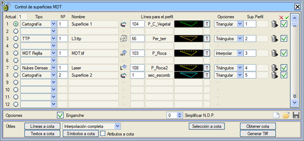
Bu yüzeyler, Yapılandırma → Tercihler → Seçenekler → Doğrusal Yapı → RAM'de Hesaplamalar menüsündeki RAM'deki Enkesitler seçeneği etkin olduğu sürece KIRMIZI KOTLAR menüsünün arazi boykesitinde de görüntülenecektir.
Bir eksenin proje kesiti tanımında, HESAP BÖLGELERİ menüsünden bitkisel toprak, zayıf zemin ve kaya derinlikleri tanımlanabilir. En fazla sağ ve sol için veri tanımlanabilir, program ilgili paralelleri oluşturur. Bu sistem kullanışlıdır ancak sınırlıdır.
Ancak, bu litolojileri temsil eden bir veri alımı mevcutsa, boykesit kesiti tasarlanırken kullanılacak arazi verilerine bu yüzeyler dahil edilmelidir; bu durumda tanımlanan kalınlıklar uygulanmaz, çünkü dosyada tanımlananların daha hassas olduğu veya basitçe kullanılması istenenlerin bunlar olduğu varsayılır.
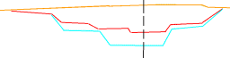 Bu araç, arazinin jeotekniği ile etkileşen proje kesitlerini hesaplamak için kullanılabilir veya özel bir metraj tablosu tanımlanırsa, açık ocak madeni gibi bir yüzey işinin takibi için hizmet edebilir.
İşlemin başarısının, yüklenen yüzeylerin kalitesine veya tanım düzeyine de bağlı olduğunu hatırlamakta fayda var.
Bir enkesitin alınacağı KM'lerin belirlenmesi (eşit aralık)
Küçük yarıçaplı kurp bölgelerinde daha sık enkesitler kullanılarak yüksek bir detay seviyesi elde etmek amacıyla, plan ekseninin yarıçaplarına göre farklı eşit aralık değerleri uygulanabilir. Geçiş eğrileri durumunda:
- Aliyman ve dairesel kurp arasında, dairesel kurp yarıçapına karşılık gelen eşit aralık uygulanır.
- Aynı işaretli yarıçapa sahip iki dairesel kurp arasında (C kurpları), daha küçük olanın yarıçapı alınır.
- Farklı işaretli yarıçapa sahip iki dairesel kurp arasında (S kurpları), her klotoid koluna kendi dairesel kurp yarıçapına karşılık gelen eşit aralık uygulanır.
- İki aliyman arasında (some klotoidi), somenin yarıçapı alınır.
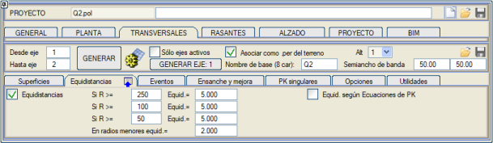
Bu aralıklar, projelendirilen kesitin hesaplanmasını sağlayacak yeterli sayıda enkesit elde edilmesini garanti etmek için yeterlidir. Daha önce belirtildiği gibi, haritayı güncellemek, proje planını çizmek veya aplikasyon verileri oluşturmak istendiğinde veriler ISPOL#.per dosyalarından (proje enkesitlerini saklayan) çıkarılır. Bir kurbun daha az 'poligonal' oldukça daha 'detaylı' olacağı mantıklıdır.
KM Eşitliklerine Göre Eşit Aralık: KM eşitliklerindeki KM'lerde bir eşit aralığa göre enkesitler çıkarılabilir. Bu KM, ISPOL.per düzenlenirken ekranın sağ üst kısmında gösterilen bilgideki KM'nin yanında parantez içinde görünen değerde kontrol edilebilir. Veya .gut Düzenle -> Pota -> KM ve KM farkları'nda Kullanıcı KM seçeneği işaretlenerek enkesitler çizilirken de görülebilir.
|
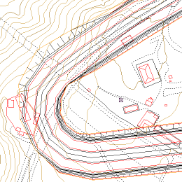
|
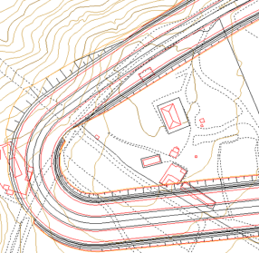 |
Kötü tanımlanmış plan (az enkesit)
|
İyi tanımlanmış plan (çok enkesit)
|
Herhangi bir proje kesiti değişikliğinin olduğu noktaları dahil et
Normalde, plan tanımlandıktan sonra Eşit Aralıklara göre enkesitler çıkarılır (varsayılan olarak etkin olan seçenek) ve boykesitteki her şey tanımlandıktan sonra, ilgili tüm olaylar etkinleştirilerek nihai enkesitler çıkarılır.
ENKESİT OLUŞTURULACAK OLAYLAR bölümü, enkesit alınacak KM'ler listesine bir değişikliği belirleyen herhangi bir özel noktanın (bir genişlik, bir orta refüj değeri, bir görüş palyesi,...) dahil edilmesi için enkesitin çeşitli tanım elemanlarını etkinleştirmeyi sağlar ve böylece mümkün olan en doğru hesaplamayı gerçekleştirir.
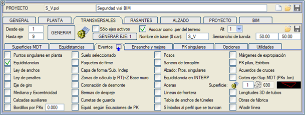
 Plandaki özel noktalar etkinleştirildiğinde, planda tasarlanan aliymanlardaki her teğet noktası ve somede bir enkesit elde ederiz. Plandaki özel noktalar etkinleştirildiğinde, planda tasarlanan aliymanlardaki her teğet noktası ve somede bir enkesit elde ederiz.
Yanal sıçramalı plan eksenleri için, plandaki özel noktalarda enkesitler çıkarılırken, sıçramadan bir mm önce ve bir mm sonra bir enkesit çıkarılır. Bu, bu enkesitler arasında dışmerkezlik ve dönme ekseni geçişini yapmayı sağlar. Kırmızı kottaki düşey sıçrama, bu iki enkesit arasındaki plandaki yanal sıçrama ile aynı KM'de yapılacaktır.
Hesap Bölgeleri olayı etkinleştirildiğinde, bu kavram altında toplanan bazı verileri devre dışı bırakabileceğimiz başka bir kutu açılır: Genel Kesimleme, Hendekler, Yarmalar, Dolgular, Dolgu ve Yarma Kaplamaları, Vektörler, Eksenler Arası Duvar, Duvar Taban Kotu, bağımsız sondajlar ve BIM Kesimlemesi.
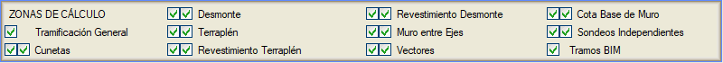
Boykesit: Özel noktalar: her iki kırmızı kot tanımının (çift platform durumunda) teğet noktalarında ve somelerinde enkesitler elde edilir. Hendekler, kafa hendekleri, orta refüj ve yardımcı kırmızı kotlar için kırmızı kotlar tanımlanmışsa, enkesitler de çıkarılır.
Hesap bölgeleri (ve KT) kutucuğu etkinleştirilirse, o zaman sadece BOYKESİT menüsündeki HESAP BÖLGELERİ kutusunda bildirilen KM'lerde değil, aynı zamanda şuralarda bildirilen KM'lerde de arazi enkesitleri elde edilecektir:
Bu bölümde, sınır çizgilerini dahil etme imkanı da bulunur. Bu, çizgileri tanımlayan her bir noktanın izdüşümünü dikkate alarak enkesitlerin tam olarak doğru yerde kesilmesini sağlar. Sınır çizgisinin başlangıç ve bitiş noktaları, her biri iki enkesit oluşturur. Biri ilgili KM'den 0,005 m önce, diğeri 0,005 m sonra.
Kırpılan enkesite semboller:
Hem enkesit enterpolasyonunda hem de arazi enkesitlerinin kesilmesinde, Kırpılan enkesite semboller olayında bu imkana sahibiz. Enkesite semboller tablosundaki her veri dört KM ekler: BaşKM-0.01, BaşKM, BitKM, BitKM+0.01.
Eksen/SAM Yüzeyi Kesişimleri (KM .lon) etkinleştirme kutucuğu, plan ekseninin seçilen SAM yüzeyinin elemanlarıyla bir kesişime sahip olduğu KM'lerde bir enkesit keser. Örneğin, eğer Harita tipindeyse, harita yüzeyinin harita çizgileriyle; eğer TTP tipindeyse, eksenin bir .ttp modelinin üçgenlerinin kenarlarıyla kesişimlerinde enkesitler çıkarır. Yani, boykesitin oluşturulacağı KM'lerde. Kullanılacak yüzeyler, Eksen/SAM Yüzeyi Kesişimleri (KM .lon) kutucuğunun yanındaki kutucukta ve Eksen/SAM Yüzeyi Kesişimleri (KM .lon) kutusunda belirtilir.
Daha önce gösterilen kurbun yeterli sayıda enkesiti olmadığı için daha az detaylı olduğu gibi, platform genişlikleri olaylarının dahil edilmemesi, bunların çizilmeyeceği anlamına gelir.
Boru 3D Uzunlukları kutucuğu etkinleştirildiğinde, boru hattı projelerinde enkesit çıkarımı gerçekleşir:
- Plandaki özel noktalar.
- Boykesitteki köşe noktaları.
- Bacalar
- Borular
- Önceki KM'lerle oluşturulan her kesimde, 3D'deki kısmi mesafenin planda tanımlanan boru uzunluğuna eşit olmasını sağlayan enkesitler ekler.
- Menfezler: her Menfez en fazla üç enkesit ekleyebilir: Biri Menfezin ana eksenle kesişiminde ve diğer ikisi giriş ve çıkış ağzının bu eksen üzerindeki izdüşüm KM'lerinde.
- KM'lere göre bordürler:
Bir değer ekleme imkanı, eğer sıfırdan büyükse, KM'lere Göre Bordürlerin her bir kesiminin başlangıç ve bitiş KM'leri arasına bu değerin katları eklenir.
Ayrıca, yüzey ve hacimlerin elde edilmesinin gerçeklikten farklı olabileceği (değişim noktaları dikkate alınmadığı için elemanlar enterpole edilir) unutulmamalıdır.
Çizgi ekle:
Çizgilerin uçlarında bir enkesit keser. Çizgi ekleme verileri .vol dosyasında saklanmalıdır, bu nedenle çizgilerin tiplerine göre tanımlanması gerekir.
BOYKESİT'te proje enkesitlerini hesaplamak için sunulan seçeneklerden birinin, bir kesit verisinin (veya olayın) olduğu noktalarda arazi enkesitlerini enterpole etmek olduğunu belirtmek ilginçtir. Bu, herhangi bir veri değiştirildiğinde her seferinde yeniden enkesit almak zorunda kalmadan tasarımın farklı durumlarını değerlendirmenizi sağlar. Sistem, her noktada önceki ve sonraki enkesiti kullanarak enkesitleri enterpole eder.
Serbestçe seçilebilen diğer özel noktalar
Başka bir olasılık, herhangi bir konuma yerleştirilebilen ve ayrıca özel bir enkesit elde etmek amacıyla bir verev açısı belirtilebilen bir dizi özel KM eklemektir.
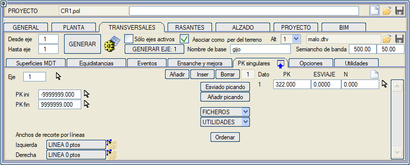
| VEREV AÇISI |
Bu sütuna girilen veriler, enkesit hesaplamasında azimuta eklenecektir.
Bu seçenek, bir dere yatağının geçişini veya eksenle kesişmeyen, dik olmayan herhangi bir başka unsuru ve taşkın sahası projelerini dikkate almak için özellikle uygundur. N sayısı, enkesit düzenleyicide 'N numaralı enkesit' olarak tanımlamak ve hatta etiketlemek için kullanılır ve ayrıca yüklendikleri eksenin ISPOL#.per dosyalarında da kullanılır. Açıkçası, bu enkesitler ISTRAM®/ISPOL®'da normal hesaplamalar için uygun değildir.
|
[Tıklayarak Verev]
|
Grafiksel olarak iki nokta tıklayarak, özel bir KM'de verev bir enkesit tanımlamayı sağlar.
|
| [Tıklayarak Ekle] |
Ekranda tıklayarak art arda KM'ler eklemeyi sağlar. Bu seçenek iletişim kutusunu geçici olarak gizler.
|
Özel KM'ler sekmesi içinde ARAÇLAR kutusunu açabiliriz:
Yarma dolgu değişim enkesitleri
|
Bu araç, kontrol noktasının yarmadan dolguya geçtiği KM'leri özel KM'ler listesine eklemeyi sağlar. Değişikliğin ne zaman yeterince önemli olduğunu belirtmemizi sağlayan seçeneklerin olduğu bir iletişim kutusu görünecektir.
|
Köşelerde verev enkesitler
|
Bu araç, tünel ağızlarındaki kazı geometrisini, boru hatlarını vb. oluşturmak için yardımcı eksenler gibi çok keskin açılı (dik açılar veya benzeri) noktalara sahip aliymanlardan oluşan özel eksenlerle kullanılabilir.
Aktif tüm eksenler kutucuğu etkinleştirilerek, aktif gruplarda tanımlanan tüm eksenler için enkesitler oluşturulur.
Köşelerde bir yelpaze şeklinde verev enkesitler oluşturur, enkesitler için dönme merkezinin köşe iç tarafındaki eksene olan mesafesini ve eksene dik enkesit ile köşe açıortayında oluşan enkesit arasındaki ara enkesit sayısını verir. İç taraf geometrisi iptal edilirse, dönme merkezine olan mesafe sıfır olabilir.
Bu araçla oluşturulan enkesit dizisini numaralandırma imkanımız vardır.
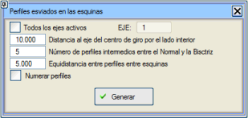
Ayrıca köşeler arasındaki bölgeleri doldurmak için enkesitler arası bir eşit aralık da tanımlanır.
Eşit aralıklar ve özel noktalar dahil olmak üzere enkesit oluşturmak için tüm olaylar devre dışı bırakılmalıdır.
Hesaplama için Boykesit Seçeneğini etkinleştirmeliyiz: Verev enkesitleri dengele.
|
KM Eşitliklerinden yuvarlak KM'ler
|
KM eşitliklerinden elde edilen KM'nin önceden belirlenmiş bir değerin katı olduğu enkesitleri özel noktalar olarak ekler.
|
Çizgiden verev enkesitler
|
Seçilen çizginin ilk ve son noktası, bu segmentin eksenle kesişim KM'si ve verev açısıyla bir enkesit eklemek için kullanılır.
|
Çizgi tipinden verev enkesitler
|
Aynı tipteki çizgilerin ilk ve son noktası, bu segmentin eksenle kesişim KM'si ve verev açısıyla bir enkesit eklemek için kullanılır.
|
| [Sırala] |
Verileri KM'ye göre yeniden sıralar.
|
| [DOSYALAR] |
Aşağıdaki seçenekleri açar: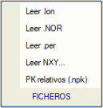
| [.lon Oku] |
Bir .lon dosyasının KM'lerini enkesit oluşturmak için özel KM'ler olarak yüklemeyi sağlar.
|
| [.per Oku] |
Bu KM'lerde yeni enkesitler kesmek için herhangi bir enkesit dosyasının KM'lerini çıkarmayı sağlar.
|
| [.NOR Oku] |
bbb eksenine, aaa eksenine dik olarak yansıtıldığında oluşturulan IS#aaabbb.NOR dosyalarının KM'lerini okur. Bir xxx eksenine enkesitler oluşturmak için noktalar işaretlenirken, herhangi bir IS#aaaxxx.NOR dosyası seçilebilir.
|
| [NXY Oku...] |
X,Y koordinatlarından tanımlanan özel KM'leri, X ve Y koordinatlarının sırasıyla ikinci ve üçüncü sütunda olması gereken bir NXY dosyasından okuyarak hesaplar, örneğin .toc dosyalarında olduğu gibi.
|
| [Göreceli KM (.npk)] |
.npk dosyası iki sütuna sahiptir. Birinci sütun kilometre taşı KM'sini, ikinci sütun ise program tarafından hesaplanan matematiksel KM'yi içerir. Kilometre taşı KM'si enkesit numarası olarak yüklenir. Ayrıca, dosyadaki KM'lere göreceli eşit aralıklarla (örneğin her 25 m'de bir) KM'ler eklemeyi sağlar. Bu değer, dosyadaki bir sonraki değere ulaşılana kadar hem kilometre taşı KM'sine hem de matematiksel KM'ye eklenir. Bu prosedür, ISTRAM®/ISPOL®'un tam sayı olmayan KM'lerine karşılık gelseler bile, kilometre taşı KM'lerine göre enkesitler çıkarmayı sağlar. Kilometre taşı KM'si, hem planda hem de boykesit ve enkesitlerde gösterilebilen enkesit numarası olarak görünecektir.
Program ayrıca, özel noktalar çıkarmak için tek bir veri (kilometre taşı KM'sine karşılık gelen) içeren satırlara sahip .npk dosyalarını da destekler. |
|
[BaşKM]
[BitKM] |
Her eksen için enkesit çıkarımının başlangıç ve bitiş KM'sini tanımlamayı sağlar. |
| Kırpma genişlikleri | Her eksen için kırpma genişliğini sol taraf için bir çizgi ve sağ taraf için başka bir çizgi ile sınırlar. |
Enkesit çıkarma modları
Enkesit çıkarma şekli, kullanılan yüzey türlerine bağlıdır. İşleyişi, Varlık kontrolü bölümündeki Enkesit çıkarma modları bölümünde uygun şekilde açıklanmıştır.
Genişletme ve iyileştirme veya demiryolu platformunun kullanılması gibi durumlarda, belirli varlıkları özel bir şekilde yorumlamaya olanak tanıyan modlar veya seçenekler vardır.
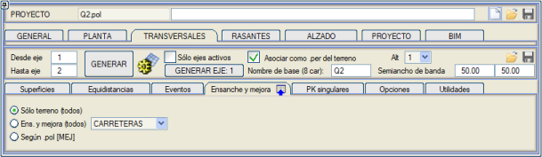
Geniş. ve İyileştirme (tümü) ve .pol'e göre [MEJ] seçenekleriyle, program harita verilerini analiz eder ve mevcut kaplamayı temsil eden varlıkları tespit eder, bu bilgi genişletme ve iyileştirme projeleri için anahtar bilgidir.
Ek işlem seçenekleri
Yukarıdakilere ek olarak, aşağıdaki seçenekler de mevcuttur:
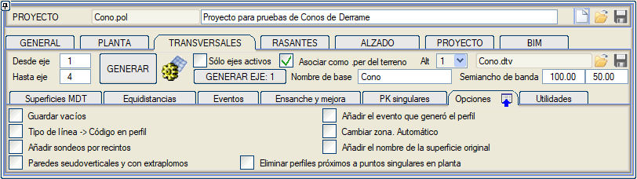
| Boşları kaydet |
Seçenek etkinleştirildiğinde, bir KM'de öngörülen yüzeylerde herhangi bir veri yoksa, enkesit yine de yüzeylerin tanımıyla ancak çizgisiz olarak kaydedilir. Seçenek etkinse, dikey menüdeki [Enkesit] tuşu ile oluşturmayı da etkiler (daha sonra bu dosya başka bir dosyayla karıştırılacaksa, boş KM'li enkesitler oluşturmak istenebilir).
Bir harita yüzeyinden (üçgenlenmemiş) ve [] Çizgi tipi-> Koda enkesitte seçeneği etkinleştirilmeden enkesitler çıkarılırken; enkesit, kesilen çizginin indeksi + 1 kod olarak kullanılarak kodlanır.
|
| Çizgi tipi → Enkesitte Kod |
Bu seçenek etkinleştirildiğinde, enkesitin her köşesine, o noktayı oluşturan harita çizgisinin tipiyle aynı olan bir kod atanır. Doğru çalışması için, SAM Yüzey Kontrolü'nde harita yüzeyi Üçgenlenmiş veya Konsollu değil, Harita seçeneğiyle bildirilmelidir.
Daha sonra, bu kod bir sembol eklemek için kolayca kullanılabilir ve böylece bu köşeler enkesitlerde kolayca bulunabilir. Bu seçenek etkinleştirildiğinde, ayrıca eksen noktası için ve genişletme ve iyileştirme enkesitleri için bir kod seçme imkanı verilir ve iyileştirme kenarı, mevcut kaplama kenarı çizgisi artı bir mesafe ile tanımlanırsa, iyileştirme kenarı için de bir kod seçmeye izin verilir.
|
| Alanlara göre sondaj ekle |
Arazi enkesiti çıkarılırken, alanlara göre sondajlar menüsünde uygun veriler tanımlanmışsa, bu bilgi enkesitlere eklenir.
|
Düşeye yakın ve konsollu duvarlar
|
3D-Yüzeylerin içe aktarılmasından gelen ve kapalı yüzeyler oluşturabilen üçgenlerden oluşan bir haritadan çıkarılan enkesitler almamız gerektiğinde bu kutucuğu etkinleştireceğiz.
Bu araç, kapalı gövdelerden enkesitler çıkarmayı sağlar. Yüzey, bir veya daha fazla kapalı gövdeden oluşabilir. Aynı anda birkaç yüzeyden enkesitler çıkarılabilir ve bazıları diğerlerinin içinde olabilir.
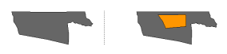
|
Enkesiti oluşturan olayı ekle
|
Enkesiti oluşturan olay türünü içeren C32 hücresini enkesite ekler: eşit aralıklar, dever diyagramı,...
Enkesit düzenleyicide bu bilgi her enkesitle birlikte gösterilir. Enkesit Düzenleyicide, Değiştir 2 aracıyla, Veri Düzenle, her enkesitle ilişkili bilgileri görmeyi ve düzenlemeyi sağlar.
Bu olayları bir enkesit potası aracılığıyla çizmek mümkündür.
|
Bölgeyi değiştir. Otomatik
|
Çok ağır haritalar için, enkesitleri oluştururken ihtiyaç duyduğu bölgeyi disk ile RAM arasında otomatik olarak yükler ve boşaltır.
|
Orijinal yüzey adını ekle
|
Arazi enkesitlerini keserken, her yüzeye orijinal SAM yüzeyinin adını/dosyasını ekler. Eğer SAM yüzeyi birkaç alternatif SAM yüzeyinden oluşuyorsa, her enkesite o yüzey için nokta veren ilk yüzey atanır.
Bu bilgi Enkesit Düzenleyici/Değiştir 2/Veri Düzenle'de düzenlenebilir.
|
Plandaki özel noktalara yakın enkesitleri sil
|
Plandaki özel noktalarda enkesitler kestiğimizde, bunlara yakın diğer enkesitlerin silinmesini sağlar, örneğin yakın enkesitlerin müdahalesi olmadan keskin açılı noktaların açıortayında enkesitler elde etmek için.
Bu seçenek boru hattı projelerinde çok kullanışlıdır.
|
Diğer verilerle enkesit oluşturmak için özel seçenekler veya araçlar
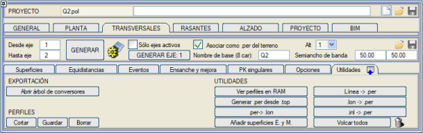
| [RAM'deki Enkesitleri Gör] |
Son çıkarma işlemi sonucunda belleğe yüklenen enkesitleri görüntülemeyi sağlar. Enkesitler sırayla gezilir ve gösterilir, bu da bir tür görsel kontrol yapmayı sağlar.
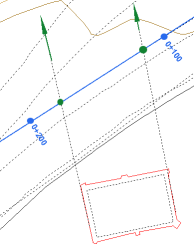 [Çizgi -> .per] seçeneği, arazi enkesitleri elde etmek için çizgilerin dinamik kullanımını sağlar. Bu aracın amacı, eksene dik olmayan kesitleri belirlemek için iki noktadan oluşan çizgileri kullanmaktır.
Çizimde, tipi bilinen ve aktif yüzeyde ilişkilendirilmiş olanlardan farklı olması gereken iki çizgi görülmektedir. Elde edilen enkesitler, bina ile elemanın ekseni arasındaki ilişkiyi tam olarak bilmeyi sağlayacaktır.
Bu enkesitlerin hesaplanması, Üçgenle kutucuğu etkinse üçgenleme ile yapılabilir.
Enkesitler mantıksal olarak verev oluşturulur ve taşkın sahalarının incelenmesinde en iyi şekilde kullanılabilir.
|
| [.top'tan .per Oluştur] |
.top veya .toc formatındaki bir nokta dosyasından bir enkesit dosyası oluşturmayı sağlar. Noktalar eksene enkesitler şeklinde alınmalıdır, aksi takdirde sonuçlar çok tuhaf olabilir. Açılır bir pencerede aşağıdaki veriler istenir:
- Eksen numarası ve .top/.toc dosya adı.
- Enkesit dosyası için İsim.
- Maksimum Yarı Genişlik.
- KM'de Tolerans ve enkesit KM'si için yuvarlama.
Fonksiyon, her noktanın KM'sini belirler ve sıralar. Eğer art arda iki nokta toleranstan daha büyük bir mesafedeyse, bir enkesit değişikliği olduğu kabul edilir. Yarı Genişlikten daha büyük bir mesafedeki noktalar dikkate alınmaz.
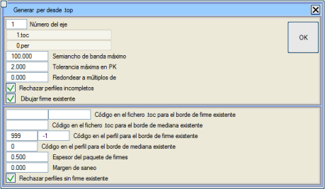
Her enkesitte, onu oluşturan noktaların ortalama KM'si hesaplanır ve ardından yuvarlama uygulanır. Örneğin, 0.019, 19.876, 40.123 ve 58.99 enkesitlerine 10'a yuvarlama uygulanırsa, 0, 20, 40 ve 60 olur, bu da bu KM'lerde oluşturulan diğer dosyalarla karıştırılmasını sağlar.
Eğer Eksik enkesitleri reddet seçeneği etkinleştirilirse, eksenin her iki tarafında noktası olmayan enkesitler kaydedilmez.
Genişletme ve iyileştirme için, Mevcut üstyapıyı çiz seçeneği, .top veya .toc dosyasında, mevcut çift platform durumunda dış ve iç asfalt kenarlarının noktalarının belirli bir kodla bulunmasını sağlar. Program, sağ ve sol kenar için farklı kodlar kullanmaya izin verir, ayrıca mevcut orta refüje karşılık gelen kodu, mevcut asfalt kalınlığını ve kenardan içeri doğru asfaltı iyileştirmek için bir mesafeyi de sorar. Bu verilerle, enkesitte mevcut kaplama çizgilerini, iyileştirme kenarını ve mevcut terasmanı oluşturur.
Mevcut üstyapısı olmayan enkesitleri reddet seçeneği, genişletme ve iyileştirme enkesitlerinde mevcut üstyapıyı gösterme durumu içindir. Etkinleştirilirse, mevcut kaplamanın her iki kenarının kesilmediği enkesitler kaydedilmez.
|
| [.lon -> .per]
|
Bir boykesit dosyasından (.lon) bir enkesit dosyası (.per) oluşturmayı sağlar, bir verinin bulunduğu her KM'de, önceden tanımlanmış bir yarı genişliğe ve o noktadaki boykesit kotuna eşit sabit bir kota sahip bir enkesit oluşturur. Bu seçenek, BOYKESİTLER çıkarma menüsünün ARAÇLAR penceresinde de mevcuttur.
|
| [.inl
-> .per] |
.inl formatındaki dosyaların .per'e aktarılmasını sağlar. .inl enkesit dosyaları aşağıdaki formata sahiptir:
- Her enkesit 4 değerli bir satırla başlar.
Enkesit_Numarası
X_eksen Y_eksen Z_eksen
- Ardından, enkesitin her noktası için iki veri içeren bir satır (en büyük pozitif mesafeden en negatif mesafeye doğru başlayarak):
Eksene_Mesafe
Kot
- Boş bir satır bir sonraki enkesiti ayırır.
Bu dosyaları içe aktarmanın iki yolu vardır:
- KM'yi getirmedikleri için, eksen noktasını ISTRAM®/ISPOL®'da önceden tanımlanmış bir analitik eksene yansıtmak mümkündür.
- Dosyada gelen eksen koordinatlarını kullanarak tanımlanan poligon hattı eksen olarak kullanılabilir, ilk noktaya KM=0 atanır ve segmentlerin uzunluğuna göre artırılır.
|
| [G. ve İ. yüzeyleri ekle] |
Genişletme ve iyileştirme projeleri durumunda bu araç, haritada seçilen belirli çizgi tiplerinden bir arazi enkesit dosyasına mevcut kaplama, kullanılabilir kaplama, mevcut terasman ve mevcut orta refüj yüzeylerini eklemeyi sağlar.
Bu çizgilerin kotta olması veya herhangi bir yüzeye ait olması gerekmez. Kaplama ve orta refüj kenar çizgileri için, konumları enkesitte mevcut en yakın noktaya yaklaştırılır, çünkü eğer sahada alınmış bir enkesitse, bu mesafelerin yeterli hassasiyetle alınmış olduğu varsayılır.
|
| [.per -> .lon]
|
Bir enkesit dosyasının .per ilk yüzeyinin geometrik eksenindeki kotu kullanarak bir boykesit dosyası .lon oluşturur. Bu seçenek, BOYKESİTLER çıkarma menüsünün ARAÇLAR penceresinde de mevcuttur.
|
Tümünü Dök
|
Bu araç, aktif eksenlerin tüm arazi enkesitlerinin ilk yüzeyinin T çizgilerini (enkesit çizgileri) oluşturur. Bu, orijinal harita verisine sahip değilsek, eksenlerde küçük değişiklikler yaparken enkesitleri yeniden çıkarmak için bu bilgiyi kullanmamızı sağlar. (Bu durumda, SAM yüzey kontrolü iletişim kutusunda, harita yüzeyi için üçgenleme seçeneğini seçmeliyiz). Çizgilerin kendi eksen modelinde mi yoksa hepsinin belirli bir modelde mi oluşturulacağını seçebiliriz.
|
ENKESİTLERİN interaktif kırpılması
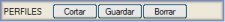Bu seçenekler, bir .per dosyasının enkesitlerinin kapladığı koridor genişliğini 'kuş bakışı' olarak değiştirmeyi sağlar.
| [Kırp] |
Kırpılmak istenen enkesit dosyasını istedikten sonra, kullanıcının her enkesit için bir noktaya tıklayarak (her zaman dışa doğru) kırpabilmesi için ekranda çizilecektir.
|
| [Kaydet] |
Kırpılmış enkesitlerin verilerini, kullanıcının karar verdiği bir adla bir dosyaya kaydeder.
|
| [Sil] |
Kırpılmış enkesitlerin bilgileri serbest bırakılır veya silinir, bu da işlemin iptal edilmesi anlamına gelir. |
Bu seçenekler, yanal bilgileri (enkesitin solundan veya sağından) veya çakışabilecek bilgileri (kurplarda olduğu gibi) ortadan kaldırmak istendiğinde özellikle uygundur. Her iki durumda da nihai anlam, enkesitlerin optimizasyonu olabilir, özellikle de HEC-RAS® gibi hidrolojik hesaplama uygulamalarında kullanılabilecekleri zaman (ISTRAM®/ISPOL®, .g01 uzantılı dosyalar oluşturan özel bir dışa aktarıcıya sahiptir).
DIŞA AKTARMA
Bizi, arazi enkesitlerinin çeşitli formatlarda dışa aktarma menüsüne götürür.
Her eksen için enkesitler
Buraya ENKESİTLER'e bir erişim eklenir: Mevcut eksen için enkesitlerin oluşturulması için tüm parametreleri özelleştirmeyi sağlar. İletişim kutusu içinde bu seçenek işaretlenmelidir ve bu veriler eksenin .vol dosyasıyla kaydedilir. Hatta bu iletişim kutusundan SAM Yüzey kontrolüne erişildiğinde, yüklü olanlar arasından enkesit için farklı yüzeyler sıralanabilir. (Bu da eksenin .vol dosyasıyla kaydedilir). Bu seçeneği işaretli olmayan eksenler, Projenin .dtv dosyasının parametrelerini ve genel enkesit yüzeylerini takip edecektir.
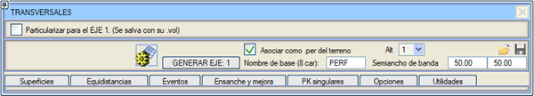
|